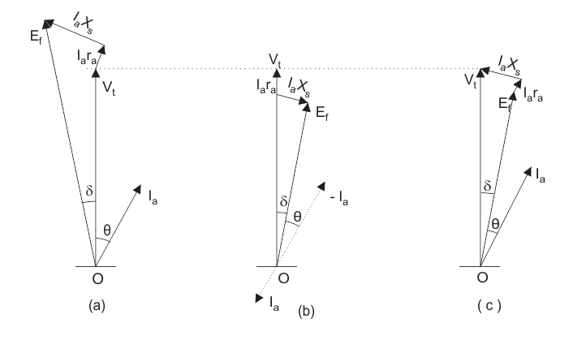
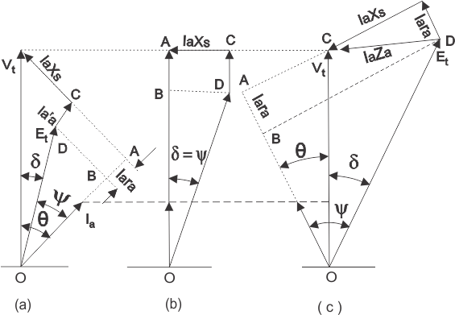
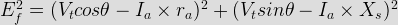
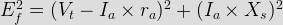
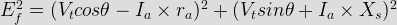

We will discuss here the simplest way of drawing the phasor diagram for synchronous motor and we will also discuss advantages of drawing the phasor diagram. Before we draw phasor diagram, let us write the various notations for each quantity at one place. Here we will use:
Ef to represent the excitation voltage
Vt to represent the terminal voltage
Ia to represent the armature current
Θ to represent the angle between terminal voltage and armature current
ᴪ to represent the angle between the excitation voltage and armature current
δ to represent the angle between the excitation voltage and terminal voltage
ra to represent the armature per phase resistance.
We will take Vt as the reference phasor in order to phasor diagram for synchronous motor. In order to draw the phasor diagram one should know these two important points which are written below:
(1) We know that if a machine is made to work as a synchronous motor then direction of armature current will in phase opposition to that of the excitation emf.
(2) Phasor excitation emf is always behind the phasor terminal voltage.
Above two points are sufficient for drawing the phasor diagram for synchronous motor. The phasor diagram for the synchronous motor is given below,

In the phasor one the direction of the armature current is opposite in phase to that of the excitation emf. It is usually customary to omit the negative sign of the armature current in the phasor of the synchronous motor so in the phasor two we have omitted the negative sign of the armature current. Now we will draw complete phasor diagram for the synchronous motor and also derive expression for the excitation emf in each case. We have three cases that are written below:

(a) Motoring operation at lagging power factor.
(b) Motoring operation at unity power factor.
(c) Motoring operation at leading power factor.
Given below are the phasor diagrams for all the operations.
(a) Motoring operation at lagging power factor: In order to derive the expression for the excitation emf for the lagging operation we first take the component of the terminal voltage in the direction of armature current Ia. Component in the direction of armature current is VtcosΘ. As the direction of armature is opposite to that of the terminal voltage therefore voltage drop will be –Iara hence the total voltage drop is (VtcosΘ - Iara) along the armature current. Similarly we can calculate the voltage drop along the direction perpendicular to armature current. The total voltage drop comes out to be (Vtsinθ - IaXs). From the triangle BOD in the first phasor diagram we can write the expression for excitation emf as

(b) Motoring operation at unity power factor: In order to derive the expression for the excitation emf for the unity power factor operation we again first take the component of the terminal voltage in the direction of armature current Ia. But here the value of theta is zero and hence we have ᴪ = δ. From the triangle BOD in the second phasor diagram we can directly write the expression for excitation emf as

(c) Motoring operation at leading power factor: In order to derive the expression for the excitation emf for the leading power factor operation we again first take the component of the terminal voltage in the direction of armature current Ia. Component in the direction of armature current is VtcosΘ. As the direction of armature is opposite to that of the terminal voltage therefore voltage drop will be (–Iara) hence the total voltage drop is (VtcosΘ - Iara) along the armature current. Similarly we can calculate the voltage drop along the direction perpendicular to armature current. The total voltage drop comes out to be (Vtsinθ+IaXs). From the triangle BOD in the first phasor diagram we can write the expression for excitation emf as

Advantages of Drawing Phasor Diagrams for Synchronous Motor
(1) Phasors are highly useful for gaining physical insight into the operation of the synchronous motors.
(2) We can derive mathematical expressions for various quantities easily with the help of phasor diagrams.
 by
by